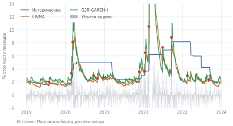
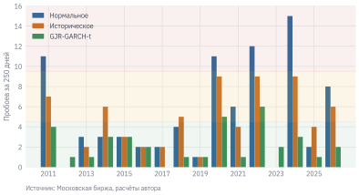

Код
import numpy as np
import pandas as pd
import matplotlib.pyplot as plt
from scipy import stats
from arch import arch_model
from qf import data, plotУтром 24 февраля 2022 г. риск-менеджер, который держит в портфеле индекс Московской биржи, видит в отчёте: однодневный VaR 99% по историческим данным последнего года – 4,8% стоимости позиции. Это означает, что убыток больше этой величины за один день случается примерно раз в сто торговых дней. К вечеру индекс полной доходности MCFTR потерял 33,3% – в 7 раз больше, чем «худший случай из ста». На следующий день он вырос на 20,0%, а затем торги акциями остановились почти на месяц, и продать позицию по какой-либо цене было нельзя.
Можно ли было это предвидеть? Точное время и масштаб шока – нет. Но то, что однодневный VaR по спокойному году не говорит ничего о таких событиях, известно заранее, и это не ошибка расчёта, а свойство меры. В этой главе мы разберём, что именно измеряют VaR и Expected Shortfall, научимся оценивать их несколькими способами, проверим, какие оценки на российском рынке оказывались честными, и посмотрим, чего эти меры в принципе не могут показать.
Данные: indexes.parquet (см. данные книги). Нужно знать: доходность, волатильность и тяжёлые хвосты (глава 4); модели GARCH (глава 8).
import numpy as np
import pandas as pd
import matplotlib.pyplot as plt
from scipy import stats
from arch import arch_model
from qf import data, plotФинансовый риск обычно делят на четыре вида. Рыночный риск – возможные потери от изменения цен: акций, облигаций, валют, товаров. Кредитный риск – потери из-за того, что заёмщик или контрагент не выполнит обязательства (глава 14). Риск ликвидности – потери из-за того, что позицию нельзя быстро закрыть по справедливой цене. Операционный риск – ошибки сотрудников, мошенничество, сбои систем. VaR и ES в этой главе измеряют рыночный риск, но сами меры универсальны: те же понятия используют для кредитного и операционного риска, меняются только модель убытков и горизонт.
Мера риска описывает распределение будущего убытка. Пусть сегодня куплено 1000 акций по 100 руб. Если завтрашняя цена – случайная величина \(P_1\), то убыток \(L = 1000 \cdot (100 - P_1)\) тоже случаен. Мера риска сводит его распределение к одному числу, по которому можно сравнивать позиции, ставить лимиты и определять, сколько капитала нужно держать на случай потерь.
Пусть \(L\) – убыток портфеля за выбранный горизонт: потеря стоимости, выраженная в рублях или в долях от стоимости позиции. Прибыль – это отрицательный убыток. Стоимость под риском (Value at Risk, VaR) с уровнем доверия \(\alpha\) – это такой убыток, который за горизонт будет превышен с вероятностью не более \(1 - \alpha\):
\[ \operatorname{VaR}_\alpha = \min\{\,\ell : P(L > \ell) \le 1 - \alpha\,\}. \tag{10.1}\]
Иначе говоря, VaR – это квантиль уровня \(\alpha\) распределения убытков. Однодневный VaR 99% в 2 млн руб. означает: в 99 днях из 100 убыток не превысит 2 млн руб.
VaR отвечает на вопрос «насколько плохим может быть обычный плохой день», но ничего не говорит о том, что происходит в оставшемся одном дне из ста. Убыток сверх VaR может быть чуть больше VaR, а может быть в десять раз больше. На этот вопрос отвечает ожидаемый недостаток (Expected Shortfall, ES, иначе CVaR) – средний убыток в худшей доле \(1-\alpha\) исходов:
\[ \operatorname{ES}_\alpha = \frac{1}{1-\alpha}\int_\alpha^1 \operatorname{VaR}_u\,du. \tag{10.2}\]
Для непрерывного распределения это также \(E[L \mid L \ge \operatorname{VaR}_\alpha]\). Но если на пороге VaR есть положительная вероятность, в хвост нужно включить только необходимую часть этой массы. Это важно для кредитного примера ниже и для конечной исторической выборки: худшие 1% из 250 наблюдений – два самых больших убытка и половина третьего.
По определению ES не меньше VaR того же уровня. Разница между ними тем больше, чем тяжелее хвост распределения убытков.
У обеих мер два параметра: горизонт и уровень доверия. По правилам Базеля II банки считали капитал под рыночный риск по VaR 99% на 10 дней, а под кредитный – по квантилю 99,9% на горизонте года. С реформой правил Базельского комитета (Fundamental Review of the Trading Book) регуляторы перешли на ES 97,5%: для нормального распределения он почти совпадает с VaR 99%, но учитывает форму хвоста.
Разумная мера риска должна поощрять диверсификацию: риск портфеля не может быть больше суммы рисков его частей. Это свойство называют субаддитивностью. Artzner и др. (1999 г.) назвали меры, обладающие им и несколькими другими естественными свойствами, когерентными. ES когерентна, VaR – нет.
Банк выдал два кредита по 100 млн руб. Каждый независимо от другого не возвращается с вероятностью 4%, и тогда банк теряет всю сумму. Чему равен VaR 95% каждого кредита? А портфеля из двух кредитов? Посчитайте до того, как читать дальше.
Вероятность потерять по одному кредиту – 4%, меньше 5%, поэтому VaR 95% каждого кредита равен нулю. В портфеле вероятность хотя бы одного дефолта – \(1 - 0{,}96^2 = 7{,}84\%\), больше 5%, и VaR 95% портфеля – 100 млн руб. По VaR диверсифицированный портфель в бесконечное число раз рискованнее суммы своих частей. ES 95% каждого кредита – средний убыток в худших 5% исходов: \(0{,}04 \cdot 100 / 0{,}05 = 80\) млн руб. ES портфеля – 103,2 млн руб., меньше суммы 160 млн руб. Пример искусственный, но такая ситуация типична для кредитного риска, опционов и других позиций с редкими крупными убытками.
Будем оценивать риск позиции в индексе полной доходности MCFTR. Убыток за день – доходность с обратным знаком, в долях стоимости позиции.
mcftr = data.load_index("MCFTR").set_index("date")["close"]
r = mcftr.pct_change().dropna() # простые дневные доходности
loss = -r
r.index[0].date(), r.index[-1].date(), len(r)
#> (datetime.date(2003, 2, 27), datetime.date(2026, 9, 29), 5878)Самый простой способ – историческое моделирование (historical simulation): считать, что завтрашний убыток распределён так же, как убытки за последние \(N\) дней, и взять их эмпирический квантиль. ES – среднее в худшей доле \(1-\alpha\) исторических наблюдений, с дробным весом граничного наблюдения, если размер хвоста нецелый. Метод не требует предположений о форме распределения, но целиком зависит от того, какие дни попали в окно.
Параметрический (дисперсионно-ковариационный) метод предполагает форму распределения доходности. Для нормального распределения со средним \(\mu\) и стандартным отклонением \(\sigma\):
\[ \operatorname{VaR}_\alpha = -\mu + z_\alpha \sigma, \qquad \operatorname{ES}_\alpha = -\mu + \sigma\,\frac{\varphi(z_\alpha)}{1 - \alpha}, \tag{10.3}\]
где \(z_\alpha\) – квантиль стандартного нормального распределения (\(z_{0{,}99} \approx 2{,}33\)), \(\varphi\) – его плотность. На горизонте одного дня среднее обычно пренебрежимо мало по сравнению с \(\sigma\).
Чтобы учесть тяжёлые хвосты, вместо нормального берут распределение Стьюдента с \(\nu\) степенями свободы, сдвигом \(m\) и масштабом \(s\), оценёнными методом максимального правдоподобия. Если \(q = t_\nu^{-1}(\alpha)\) – квантиль стандартного распределения Стьюдента, а \(f_\nu\) – его плотность, то
\[ \operatorname{VaR}_\alpha = -m + s\,q, \qquad \operatorname{ES}_\alpha = -m + s\,\frac{f_\nu(q)}{1-\alpha}\cdot\frac{\nu + q^2}{\nu - 1}. \tag{10.4}\]
Масштаб \(s\) – не стандартное отклонение: у распределения Стьюдента дисперсия равна \(s^2 \nu/(\nu-2)\). Если подставлять в формулы оценку стандартного отклонения \(\sigma\), её нужно умножить на \(\sqrt{(\nu-2)/\nu}\), причём одинаково и в VaR, и в ES.
Сравним три метода на окне в 250 дней, предшествующих последней дате снимка.
alpha = 0.99
window = loss.iloc[-250:]
def empirical_es(losses, alpha):
"""Средний убыток в худшей доле 1-alpha эмпирического распределения."""
values = np.sort(np.asarray(losses, dtype=float))[::-1]
if not 0 < alpha < 1 or not len(values) or not np.isfinite(values).all():
raise ValueError("Нужны конечные убытки и 0 < alpha < 1")
mass = (1 - alpha) * len(values)
full = int(np.floor(mass))
return (values[:full].sum() + (mass - full) * values[full]) / mass
var_hs = window.quantile(alpha)
es_hs = empirical_es(window, alpha)
mu, sigma = r.iloc[-250:].mean(), r.iloc[-250:].std()
z = stats.norm.ppf(alpha)
var_n = -mu + z * sigma
es_n = -mu + sigma * stats.norm.pdf(z) / (1 - alpha)
nu, m, s = stats.t.fit(r.iloc[-250:]) # степени свободы, сдвиг, масштаб
q = stats.t.ppf(alpha, nu)
var_t = -m + s * q
es_t = -m + s * stats.t.pdf(q, nu) / (1 - alpha) * (nu + q ** 2) / (nu - 1)
pd.DataFrame({"VaR 99%": [var_hs, var_n, var_t], "ES 99%": [es_hs, es_n, es_t]},
index=["Историческое", "Нормальное", "Стьюдента"]).round(4)
#> VaR 99% ES 99%
#> Историческое 0.0409 0.0422
#> Нормальное 0.0338 0.0387
#> Стьюдента 0.0410 0.0588mcftr <- qf_load_index("MCFTR")
r <- diff(mcftr$close) / head(mcftr$close, -1)
loss <- -tail(r, 250)
alpha <- 0.99
var_hs <- quantile(loss, alpha, type = 7)
empirical_es <- function(loss, alpha) {
stopifnot(length(loss) > 0, all(is.finite(loss)), alpha > 0, alpha < 1)
x <- sort(loss, decreasing = TRUE)
mass <- (1 - alpha) * length(x)
full <- floor(mass)
(sum(x[seq_len(full)]) + (mass - full) * x[full + 1]) / mass
}
es_hs <- empirical_es(loss, alpha)
mu <- mean(tail(r, 250)); sigma <- sd(tail(r, 250))
z <- qnorm(alpha)
var_n <- -mu + z * sigma
es_n <- -mu + sigma * dnorm(z) / (1 - alpha)
round(c(var_hs = unname(var_hs), es_hs = es_hs, var_n = var_n, es_n = es_n), 4)
#> var_hs es_hs var_n es_n
#> 0.0409 0.0422 0.0338 0.0387На последнем году данных оценки VaR близки: 4,1% по историческому методу, 3,4% по нормальному и 4,1% по распределению Стьюдента. ES различаются сильнее: по Стьюденту с 3,6 степенями свободы – 5,9%, по нормальному – 3,9%, по историческому – 4,2%. Исторический ES здесь – среднее всего двух-трёх худших дней года, и на такую оценку нельзя полагаться. Различие методов лучше видно на длинной истории. На всей истории с 27.02.2003 исторический VaR 99% – 5,3%, а ES 99% – 8,3%: средний убыток в худший день из ста в 1,6 раза больше порога. Нормальное распределение с той же волатильностью дало бы VaR 99% 4,4% и предсказывало бы гораздо более тонкий хвост. Как мы видели в разделе 4.4, крайние движения российского рынка случаются намного чаще, чем допускает нормальное распределение. Это главная слабость параметрического метода с нормальным распределением.
В учебных расчётах VaR часто встречаются три ошибки, которые легко повторить. Переменная alpha = 0.05 называлась уровнем доверия, хотя уровень доверия – 95%, а 5% – вероятность превышения. VaR в одних ячейках получался отрицательным числом (квантиль доходности, умноженный на стоимость позиции), а в другой – положительным, но с ожидаемой доходностью, прибавленной к убытку вместо вычитания. В ES по распределению Стьюдента не было множителя \(\sqrt{(\nu-2)/\nu}\), который стоял в формуле VaR строкой выше. Договоритесь о соглашениях один раз и придерживайтесь их: в этой книге VaR и ES – положительные числа, убыток – доходность с обратным знаком, \(\alpha\) – уровень доверия (0,99), а \(1-\alpha\) – вероятность превышения.
VaR и ES – оценки по выборке, и у них есть ошибка. Измерить её можно бутстрепом: много раз выбрать из имеющихся дней случайную выборку того же размера с возвращением, пересчитать по каждой VaR и ES и посмотреть на разброс результатов.
def bootstrap_var_es(losses, alpha=0.99, n_boot=2000, seed=42):
rng = np.random.default_rng(seed)
out = []
for i in range(n_boot):
sample = rng.choice(losses, size=len(losses), replace=True)
v = np.quantile(sample, alpha)
out.append((v, empirical_es(sample, alpha))) # ES – по той же подвыборке
return np.percentile(np.array(out), [2.5, 97.5], axis=0)
ci_year = bootstrap_var_es(loss.iloc[-250:].values)
ci_full = bootstrap_var_es(loss.values)
pd.DataFrame({"VaR 99%, год": ci_year[:, 0], "ES 99%, год": ci_year[:, 1],
"VaR 99%, вся история": ci_full[:, 0], "ES 99%, вся история": ci_full[:, 1]},
index=["2,5%", "97,5%"]).round(4)
#> VaR 99%, год ES 99%, год VaR 99%, вся история ES 99%, вся история
#> 2,5% 0.0310 0.0393 0.0465 0.0702
#> 97,5% 0.0425 0.0429 0.0573 0.0960По всей истории 95%-й интервал для VaR 99% – от 4,6% до 5,7%, для ES 99% – от 7,0% до 9,6%: ES оценивается менее точно, потому что зависит от нескольких самых крайних наблюдений. На одном годе интервал для VaR – от 3,1% до 4,2%, а для ES – от 3,9% до 4,3%. Последний интервал обманчиво узок. Бутстреп перебирает только уже наблюдавшиеся дни и не может создать убыток больше худшего дня выборки, а в хвост 1% годовой выборки попадают всего два-три дня. Для крайних квантилей и коротких выборок бутстреп недооценивает неопределённость.
Оценку ES нужно считать по той же подвыборке, по которой найден квантиль. Если взять квантиль из подвыборки, а среднее хвоста – по исходным данным (такая ошибка встречается на практике), разброс ES окажется искусственно заниженным.
Для горизонта \(H\) дней VaR часто получают из однодневного умножением на \(\sqrt{H}\). Правило верно, если дневные доходности независимы и одинаково нормально распределены, – то же допущение, что при переводе дневной волатильности в годовую.
r10 = (1 + r).rolling(10).apply(np.prod, raw=True) - 1 # доходность за 10 дней
scale = {"one_day": loss.quantile(0.99), "sqrt10": loss.quantile(0.99) * np.sqrt(10),
"empirical": (-r10).quantile(0.99)}
{k: round(v, 4) for k, v in scale.items()}
#> {'one_day': 0.0526, 'sqrt10': 0.1663, 'empirical': 0.1637}На MCFTR правило работает неплохо: 16,6% против эмпирического 10-дневного квантиля 16,4%. Два противоположных эффекта частично компенсируют друг друга: тяжёлые хвосты дневных доходностей при сложении за 10 дней ослабевают, а кластеры волатильности, наоборот, делают плохие дни соседями. Для отдельных бумаг и коротких периодов результат может оказаться заметно хуже, поэтому правило \(\sqrt{H}\) стоит проверять, а не применять механически. Кроме того, 10-дневный VaR предполагает, что позицию можно держать или закрыть в течение 10 дней. В феврале – марте 2022 г. торгов не было почти месяц.
Риск меняется во времени (глава 8), и мера риска должна за ним следовать. Сравним четыре способа считать VaR 99% на следующий день в каждый торговый день с 2010 г.
Добавим пятый, гибридный метод – фильтрованную историческую симуляцию (filtered historical simulation, FHS). Модель GARCH «отфильтровывает» из доходностей меняющуюся волатильность: стандартизованные остатки \(z_t = (r_t - \mu)/\sigma_t\) распределены примерно одинаково во все периоды. Квантиль берётся не из теоретического распределения, а из эмпирического распределения этих остатков, и умножается на прогноз волатильности. FHS сочетает реакцию GARCH на текущий риск с реальной формой хвоста.
alpha = 0.99
test = r.loc["2010-01-01":].index
# 1–2. Скользящее окно 250 дней; shift(1) – оценка на день t использует данные до t-1
var_hs = loss.rolling(250).quantile(alpha).shift(1)
var_norm = (-r.rolling(250).mean() + stats.norm.ppf(alpha) * r.rolling(250).std()).shift(1)
# 3. EWMA: дисперсия на день t по доходностям до t-1
ewma_var = (r ** 2).ewm(alpha=1 - 0.94, adjust=False).mean().shift(1)
var_ewma = stats.norm.ppf(alpha) * np.sqrt(ewma_var)
# 4–5. GJR-GARCH(1,1) со Стьюдентом и FHS; параметры – по данным до начала года
rp = r * 100
var_garch = pd.Series(np.nan, index=r.index)
var_fhs = pd.Series(np.nan, index=r.index)
for year in range(2010, r.index[-1].year + 1):
last = rp.loc[:f"{year - 1}-12-31"].index[-1]
spec = dict(mean="Constant", vol="GARCH", p=1, o=1, q=1, dist="t")
fit = arch_model(rp.loc[:last], **spec).fit(disp="off")
fc = arch_model(rp, **spec).fix(fit.params).forecast(start=last, horizon=1, reindex=False)
# строка с датой t – прогноз на следующий торговый день
pos = rp.index.get_indexer(fc.variance.index) + 1
keep = pos < len(rp)
target = rp.index[pos[keep]]
this_year = target.year == year
mean_f = fc.mean["h.1"].values[keep][this_year]
vol_f = np.sqrt(fc.variance["h.1"].values[keep][this_year])
nu = fit.params["nu"]
q_t = stats.t.ppf(1 - alpha, nu) * np.sqrt((nu - 2) / nu) # квантиль t с единичной дисперсией
z_hist = ((rp.loc[:last] - fit.params["mu"]) / fit.conditional_volatility).dropna()
q_fhs = np.quantile(z_hist, 1 - alpha)
var_garch.loc[target[this_year]] = -(mean_f + q_t * vol_f) / 100
var_fhs.loc[target[this_year]] = -(mean_f + q_fhs * vol_f) / 100
V = pd.DataFrame({"Историческое": var_hs, "Нормальное": var_norm, "EWMA": var_ewma,
"GJR-GARCH-t": var_garch, "FHS": var_fhs}).loc[test]fig, ax = plt.subplots()
period = V.loc["2019":"2023"]
ax.bar(period.index, loss.loc[period.index] * 100, width=1.5, color="#B0B7C3", label="Убыток за день")
for c in ["Историческое", "EWMA", "GJR-GARCH-t"]:
ax.plot(period.index, period[c] * 100, linewidth=1.2, label=c)
hits = period.index[loss.loc[period.index] > period["GJR-GARCH-t"]]
ax.scatter(hits, loss.loc[hits] * 100, color="#B8412E", s=12, zorder=3)
ax.set_ylim(-2, 14)
ax.set_ylabel("% стоимости позиции")
ax.legend(ncol=2)
plot.source(ax, "Московская биржа, расчёты автора")
plt.show()
На графике видно главное различие методов. Историческая оценка меняется ступеньками и запаздывает: крупный убыток сразу поднимает квантиль, а через 250 дней резко выпадает из окна. EWMA и GARCH реагируют на всплеск волатильности за день-два и так же постепенно возвращаются к обычному уровню. Ось обрезана на 14%: убыток 24 февраля 2022 г., 33,3%, на график не помещается.
Что показывали методы утром 24 февраля? Исторический VaR 99% – 4,8%, нормальный – 3,4%, EWMA – 7,9%, GJR-GARCH-t – 10,9%, FHS – 11,5%. Модели волатильности успели отреагировать на падения 21 и 22 февраля: ещё 18 февраля GARCH-оценка была 6,3%. Но фактический убыток превысил даже самую высокую оценку втрое. Ни одна модель, оценённая по прошлым данным, не предскажет убыток такого масштаба: худший день MCFTR до этого, 06.10.2008, принёс убыток 18,7%. Для таких событий служат стресс-тесты – расчёт убытка по заданным сценариям («рынок падает на 30%, торги останавливаются на месяц»), без ссылки на вероятность.
Однодневный VaR предполагает, что позицию можно закрыть по рыночной цене за день. С 28 февраля по 23 марта 2022 г. торги акциями на Московской бирже не проводились, а иностранные инвесторы не могли продать бумаги и после возобновления торгов. Риск ликвидности – невозможность продать актив без большой потери или вообще продать его – в стандартный VaR не входит. Индексы в эти дни не рассчитывались: в данных книги доходность MCFTR за 25 февраля сразу сменяется доходностью за 25 марта, а значение за 24 марта, первый день торгов, в снимке отсутствует.
Если VaR 99% оценён правильно, убыток должен превышать его в среднем в 1% дней. День, когда убыток больше VaR, называют пробоем (exception, violation). Пусть за \(n\) дней было \(k\) пробоев. Если модель верна, \(k\) имеет биномиальное распределение с вероятностью успеха \(p = 1 - \alpha\). Тест Kupiec (1995 г.) (proportion of failures, POF) сравнивает правдоподобие наблюдаемой доли пробоев \(\hat p = k/n\) с теоретической:
\[ LR_{POF} = -2 \ln \frac{(1-p)^{n-k}\,p^k}{(1-\hat p)^{n-k}\,\hat p^{\,k}} \sim \chi^2(1). \tag{10.5}\]
Слишком много пробоев означает, что риск занижен; слишком мало – что модель чрезмерно осторожна и требует лишнего капитала. Тест отвергает модель в обоих случаях.
В учебных работах среднее и стандартное отклонение часто оценивают по тем же 1000 дням, на которых затем считают пробои. VaR получается одним числом на весь период, а проверка показывает только, насколько хорошо нормальное распределение описывает уже известную выборку. Это не бэктест: VaR на каждый день нужно считать только по данным, известным накануне, например по скользящему окну (раздел 10.3). Второе частое заблуждение – считать малое число пробоев безопасным результатом. Модель, которая систематически завышает риск, тоже ошибается: она требует лишнего капитала и ограничивает позиции без причины.
Правильная доля пробоев ещё не всё. Если пробои идут сериями, модель плохо реагирует на изменение риска: после первого крупного убытка она продолжает показывать низкий VaR. Тест Christoffersen (1998 г.) проверяет, зависит ли вероятность пробоя сегодня от того, был ли пробой вчера. Обозначим \(\pi_{01}\) долю пробоев среди дней после дня без пробоя, \(\pi_{11}\) – после дня с пробоем. При независимости они равны; статистика отношения правдоподобия также имеет распределение \(\chi^2(1)\).
def kupiec(hits, alpha):
"""Тест Купика: число пробоев, их доля и p-значение."""
n, k = len(hits), int(hits.sum())
p, ph = 1 - alpha, k / n
ll_null = (n - k) * np.log(1 - p) + k * np.log(p)
ll_alt = (n - k) * np.log(1 - ph) + k * np.log(ph) if 0 < k < n else 0.0
return k, ph, stats.chi2.sf(-2 * (ll_null - ll_alt), 1)
def christoffersen(hits):
"""Тест независимости пробоев: число пробоев подряд и p-значение."""
h = hits.astype(int).values
prev, cur = h[:-1], h[1:]
n00, n01 = ((prev == 0) & (cur == 0)).sum(), ((prev == 0) & (cur == 1)).sum()
n10, n11 = ((prev == 1) & (cur == 0)).sum(), ((prev == 1) & (cur == 1)).sum()
pi01, pi11 = n01 / (n00 + n01), n11 / max(n10 + n11, 1)
pi = (n01 + n11) / len(cur)
def ll(p, a, b): # a наблюдений «нет», b наблюдений «да»
return (a * np.log(1 - p) if a else 0) + (b * np.log(p) if b else 0)
lr = -2 * (ll(pi, n00 + n10, n01 + n11) - ll(pi01, n00, n01) - ll(pi11, n10, n11))
return n11, stats.chi2.sf(lr, 1)
realized = loss.loc[V.index]
rows = {}
for method in V.columns:
hits = realized > V[method]
k, rate, p_k = kupiec(hits, alpha)
pairs, p_c = christoffersen(hits)
rows[method] = {"Пробоев": k, "Доля, %": rate * 100, "p Купика": p_k,
"Пробоев подряд": pairs, "p Кристофферсена": p_c,
"Средний VaR, %": V[method].mean() * 100}
backtest = pd.DataFrame(rows).Tkupiec <- function(hits, alpha) {
n <- length(hits); k <- sum(hits); p <- 1 - alpha; ph <- k / n
lr <- -2 * ((n - k) * log(1 - p) + k * log(p) - ((n - k) * log(1 - ph) + k * log(ph)))
c(k = k, rate = ph, p_value = pchisq(lr, df = 1, lower.tail = FALSE))
}
# VaR по историческому методу на окне 250 дней (оценка на t – по данным до t-1)
loss_all <- -r
n <- length(loss_all)
var_hs <- sapply(251:n, function(t) quantile(loss_all[(t - 250):(t - 1)], 0.99, type = 7))
hits <- loss_all[251:n] > var_hs
round(kupiec(hits, 0.99), 4)
#> k rate p_value
#> 89.0000 0.0158 0.0001ru = lambda v: f"{v:.2f}".replace(".", ",")
(backtest.style
.format(ru, subset=["Доля, %", "Средний VaR, %"])
.format(lambda v: f"{v:.3f}".replace(".", ","), subset=["p Купика", "p Кристофферсена"])
.format("{:.0f}", subset=["Пробоев", "Пробоев подряд"]))| Пробоев | Доля, % | p Купика | Пробоев подряд | p Кристофферсена | Средний VaR, % | |
|---|---|---|---|---|---|---|
| Историческое | 66 | 1,58 | 0,001 | 4 | 0,024 | 3,48 |
| Нормальное | 81 | 1,94 | 0,000 | 10 | 0,000 | 3,17 |
| EWMA | 76 | 1,82 | 0,000 | 3 | 0,222 | 2,93 |
| GJR-GARCH-t | 36 | 0,86 | 0,353 | 0 | 0,429 | 3,45 |
| FHS | 28 | 0,67 | 0,022 | 0 | 0,539 | 3,67 |
За 4 184 торговых дня при верной модели следовало ожидать около 42 пробоев. Три метода с нормальным распределением или коротким окном заметно занижают риск. Нормальное распределение дало 1,94% пробоев – почти вдвое больше нужного, и пробои шли сериями: тест Кристофферсена отвергает независимость. EWMA быстро реагирует на всплески волатильности, поэтому пробои у неё реже идут подряд, но нормальное распределение по-прежнему недооценивает хвост: доля пробоев 1,82%. Историческое моделирование учитывает форму хвоста, но запаздывает: 1,58%.
Модель GJR-GARCH со Стьюдентом проходит оба теста: доля пробоев 0,86%, p-значения тестов Купика и Кристофферсена – 0,35 и 0,43. Обе составляющие важны: модель волатильности отвечает за реакцию на текущий риск, распределение Стьюдента – за толщину хвоста. FHS оказалась даже излишне осторожной: 0,67% пробоев, и тест Купика отвергает её на 5%-м уровне. Средний VaR у неё выше, чем у GARCH-t: эмпирический хвост стандартизованных остатков, куда вошли 2008 и 2014 гг., тяжелее, чем у подобранного распределения Стьюдента.
Регуляторы оценивают модели банков по числу пробоев однодневного VaR 99% за последние 250 торговых дней. Правила Базельского комитета делят результат на три зоны: зелёная – до 4 пробоев, жёлтая – от 5 до 9, красная – 10 и более. В жёлтой зоне банк увеличивает капитал под рыночный риск, в красной модель, как правило, нужно заменить.
yearly = (realized.values[:, None] > V.values).astype(int)
yearly = pd.DataFrame(yearly, index=V.index, columns=V.columns).rolling(250).sum().dropna()
yearly = yearly.groupby(yearly.index.year).last()
fig, ax = plt.subplots()
years = yearly.index.values
for i, c in enumerate(["Нормальное", "Историческое", "GJR-GARCH-t"]):
ax.bar(years + (i - 1) * 0.27, yearly[c], width=0.27, label=c)
ax.axhspan(-0.5, 4.5, color="#3F8F5B", alpha=0.08)
ax.axhspan(4.5, 9.5, color="#E3B23C", alpha=0.12)
ax.axhspan(9.5, 16, color="#B8412E", alpha=0.08)
ax.set_ylim(0, 16)
ax.set_xticks(years[::2], labels=[str(y) for y in years[::2]])
ax.set_ylabel("Пробоев за 250 дней")
ax.legend()
plot.source(ax, "Московская биржа, расчёты автора")
plt.show()
На рисунке показаны последние 250 наблюдений на конец каждого года; для неполного последнего года – на последнюю дату снимка. Окна могут пересекаться. Модель с нормальным распределением находилась в красной зоне на показанных датах в 2011, 2020, 2022, 2024 гг. Особенно показателен 2024 г. с 15 пробоями: после спокойного 2023 г. волатильность выросла, а окно в 250 дней долго удерживало оценку на низком уровне спокойного года. Модель GJR-GARCH-t ни на одной из показанных дат не попала в красную зону; больше всего пробоев у неё – 6 в 2022 г.
Несколько оговорок к бэктесту. Пробоев за 250 дней мало, и даже правильная модель с вероятностью около 11% попадает в жёлтую зону случайно. Тесты проверяют только частоту и независимость пробоев, но не их размер: модель, у которой пробои редкие, но огромные, тест Купика пройдёт. Именно поэтому регуляторы перешли к ES, а для ES разработаны отдельные, более сложные процедуры бэктеста.
Для портфеля из нескольких активов параметрический метод использует ковариационную матрицу: \(\sigma_p = \sqrt{w'\Sigma w}\), как в главе 11. Но если горизонт длиннее дня, распределение не нормальное или в портфеле есть инструменты с нелинейной зависимостью от цен (опционы, облигации с большой выпуклостью), формулы перестают работать. Тогда распределение убытка получают моделированием: генерируют много сценариев изменения факторов риска, переоценивают портфель в каждом и берут квантиль полученных убытков.
Рассмотрим портфель на 1 млн руб.: 60% в акциях (MCFTR), 40% в ОФЗ (индекс полной доходности RGBITR). Найдём 10-дневные VaR 99% и ES 97,5% двумя способами моделирования: по многомерному нормальному распределению с оценёнными средними и ковариациями и бутстрепом – случайной выборкой реальных дней с сохранением совместного движения акций и облигаций.
ix = data.load_index(["MCFTR", "RGBITR"], start="2024-10-01").pivot(index="date", columns="ticker", values="close")
R2 = ix[["MCFTR", "RGBITR"]].pct_change().dropna() # последние два года
w = np.array([0.6, 0.4])
value, H, N = 1_000_000, 10, 100_000
rng = np.random.default_rng(42)
normal_paths = rng.multivariate_normal(R2.mean().values, R2.cov().values, size=(N, H))
boot_paths = R2.values[rng.integers(0, len(R2), size=(N, H))] # случайные реальные дни
def var_es(paths):
pnl = value * (((1 + paths).prod(axis=1) - 1) @ w) # результат за 10 дней, руб.
losses = -pnl
return {"VaR 99%": np.quantile(losses, 0.99),
"ES 97,5%": empirical_es(losses, 0.975)}
mc = pd.DataFrame({"Нормальное": var_es(normal_paths), "Бутстреп": var_es(boot_paths)}).T
stocks_only = value * stats.norm.ppf(0.99) * R2["MCFTR"].std() * np.sqrt(H)
mc.round(0)
#> VaR 99% ES 97,5%
#> Нормальное 70669.0 70817.0
#> Бутстреп 68145.0 68457.010-дневный VaR 99% портфеля – около 71 тыс. руб. по нормальному моделированию и 68 тыс. руб. по бутстрепу. Если бы весь миллион был в акциях, VaR составил бы около 112 тыс. руб. Облигации снижают риск, но меньше, чем при независимых доходностях: за последние два года корреляция дневных доходностей MCFTR и RGBITR составила 0,54. Акции и ОФЗ одинаково реагировали на ожидания по ключевой ставке.
Бутстреп сохраняет совместное распределение двух активов в отдельный день, но перемешивает дни и поэтому теряет кластеры волатильности. Если такие кластеры важны, дни выбирают блоками или моделируют траектории по модели GARCH. Результат моделирования зависит от окна данных не меньше, чем исторический VaR: два последних года не содержат ни 2008, ни 2022 гг.
В главе 11 портфель выбирался по дисперсии. Вместо неё можно минимизировать ES: такой критерий штрафует именно крупные убытки и не наказывает за сильный рост. Rockafellar и Uryasev (2000 г.) показали, что на исторических сценариях задача минимизации ES сводится к линейному программированию. Если \(r_t\) – вектор доходностей активов в день \(t\), \(T\) – число дней, то
\[ \min_{w,\,\zeta,\,u}\ \zeta + \frac{1}{(1-\alpha)T}\sum_{t=1}^{T} u_t \quad\text{при}\quad u_t \ge -r_t'w - \zeta,\ \ u_t \ge 0,\ \ \sum_i w_i = 1,\ \ w_i \ge 0. \tag{10.6}\]
В оптимальном решении \(\zeta\) равна VaR портфеля, а значение целевой функции – его ES. Найдём портфель с минимальным ES 97,5% из 15 крупных акций главы 11 по дневным доходностям за последние три года и сравним его с портфелем минимальной дисперсии.
from scipy.optimize import linprog, minimize
TICKERS = ["SBER", "GAZP", "LKOH", "GMKN", "ROSN", "NVTK", "TATN", "MTSS",
"MGNT", "SNGS", "CHMF", "NLMK", "PLZL", "ALRS", "VTBR"]
start = (r.index[-1] - pd.DateOffset(years=3)).date()
Rs = data.load_prices(TICKERS, start=start)[TICKERS].pct_change().dropna()
Rv = Rs.values
T, n = Rv.shape
a_es = 0.975
# переменные: веса w (n), порог zeta (1), превышения u (T)
c = np.r_[np.zeros(n), 1.0, np.full(T, 1 / ((1 - a_es) * T))]
A_ub = np.hstack([-Rv, -np.ones((T, 1)), -np.eye(T)]) # -r_t'w - zeta - u_t <= 0
A_eq = np.r_[np.ones(n), 0.0, np.zeros(T)][None, :]
bounds = [(0, 1)] * n + [(None, None)] + [(0, None)] * T
lp = linprog(c, A_ub=A_ub, b_ub=np.zeros(T), A_eq=A_eq, b_eq=[1], bounds=bounds, method="highs")
w_es = lp.x[:n]
cov = Rs.cov().values * 252 # годовая, для устойчивости оптимизатора
w_mv = minimize(lambda w: w @ cov @ w, np.ones(n) / n, bounds=[(0, 1)] * n,
constraints=[{"type": "eq", "fun": lambda w: w.sum() - 1}], method="SLSQP").x
def risk(w):
port_loss = -(Rv @ w)
v = np.quantile(port_loss, a_es)
return {"ES 97,5%, %": empirical_es(port_loss, a_es) * 100,
"Волатильность, % год.": np.sqrt(w @ cov @ w) * 100}
ports = {"Мин. ES": w_es, "Мин. дисперсия": w_mv, "Равные веса": np.ones(n) / n}
comp = pd.DataFrame({k: pd.Series(w, index=TICKERS) for k, w in ports.items()})
comp = comp[(comp > 0.01).any(axis=1)].mul(100).round(1)
pd.concat([comp, pd.DataFrame({k: risk(w) for k, w in ports.items()}).round(2)])
#> Мин. ES Мин. дисперсия Равные веса
#> SBER 70.30 52.10 6.70
#> GAZP 1.90 0.00 6.70
#> LKOH 18.10 19.90 6.70
#> GMKN 0.00 0.00 6.70
#> ROSN 0.00 0.00 6.70
#> NVTK 0.00 0.00 6.70
#> TATN 0.00 0.00 6.70
#> MTSS 9.80 17.30 6.70
#> MGNT 0.00 0.00 6.70
#> SNGS 0.00 0.00 6.70
#> CHMF 0.00 0.00 6.70
#> NLMK 0.00 0.00 6.70
#> PLZL 0.00 10.60 6.70
#> ALRS 0.00 0.00 6.70
#> VTBR 0.00 0.00 6.70
#> ES 97,5%, % 3.12 3.20 3.80
#> Волатильность, % год. 21.17 20.66 24.45Портфель с минимальным ES содержит 4 бумаги, и на SBER приходится 70% капитала. Его ES 97,5% – 3,1% в день против 3,2% у портфеля минимальной дисперсии и 3,8% у портфеля с равными весами. Разница между двумя оптимальными портфелями невелика, и состав у них похож: на трёхлетнем окне бумаги с низкой дисперсией оказались и бумагами с лёгким левым хвостом.
Оптимизация по ES наследует все проблемы, которые мы видели в главе 11 (раздел 11.4), и даже усиливает их: ES 97,5% по трём годам определяется примерно 19 худшими днями, и замена одного-двух из них может заметно изменить веса. Поэтому на практике к задаче добавляют ограничения на долю одной бумаги, а результат проверяют вне выборки, как в разделе 11.5.
Посчитайте для своей акции однодневные VaR 99% и ES 97,5% историческим и нормальным методами на последнем году и на всей истории. Как отношение ES к VaR связано с тяжестью хвоста?
Проведите бэктест исторического VaR и VaR по GJR-GARCH-t для своей акции с 2015 г. Какие методы проходят тесты Купика и Кристофферсена?
Найдите пять крупнейших пробоев VaR по GARCH-t для своей акции. С какими событиями они связаны? Можно ли было ожидать их по данным до этих дней?
Проведите бэктест однодневного VaR 95% по нормальному распределению для своей акции за последние 1000 торговых дней (это домашнее задание прошлого года курса). Сколько пробоев ожидалось и сколько получилось? Занижает ли модель риск? Повторите для распределения Стьюдента.